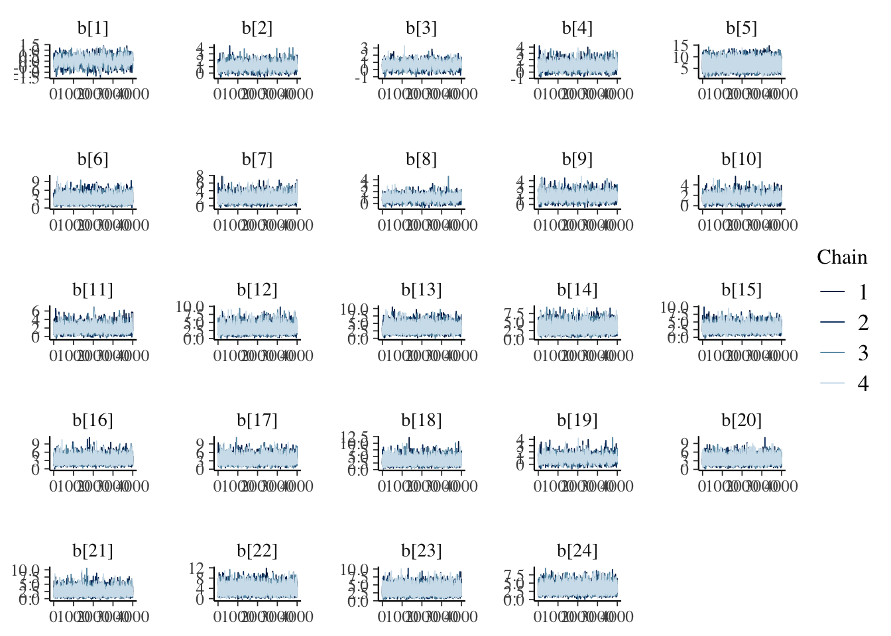

Chapter 6 Extra I: BBOB 2009 and 2019
Here we have both 2009 and 2019 together in the analysis
6.1 Importing the data
To illustrate and make the analysis we will use 5 as the number of dimensions for the benchmark functions
d_bbob2009 <- read_csv('data/bbob2009.csv') %>%
select(algId, DIM, funcId, runs, succ, budget) %>%
filter(DIM==5)
d_bbob2019 <- read_csv('data/bbob2019.csv') %>%
select(algId, DIM, funcId, runs, succ, budget) %>%
filter(DIM==5)
d_bbob <- rbind(d_bbob2009, d_bbob2019) %>%
mutate(algId_index = as.integer(as.factor(algId)))
#vector with the names in order
benchmarks <- seq(1,24)
algorithms <- levels(as.factor(d_bbob$algId))6.2 Preparing the Stan data
bbob_standata <- list(
N = nrow(d_bbob),
y_succ = as.integer(d_bbob$succ),
N_tries = as.integer(d_bbob$runs),
p = d_bbob$algId_index,
Np = as.integer(length(unique(d_bbob$algId_index))),
item = as.integer(d_bbob$funcId),
Nitem = as.integer(length(unique(d_bbob$funcId)))
)irt2pl <- cmdstan_model('models/irt2pl.stan')
fit_bbob <- irt2pl$sample(
data= bbob_standata,
seed = seed,
chains = 4,
iter_sampling = 4000,
parallel_chains = 4,
max_treedepth = 15
)
fit_bbob$save_object(file='fitted/bbob-2009-2019-5.RDS')To load the fitted model to save time in compiling this document
fit_bbob<-readRDS('fitted/bbob-2009-2019-5.RDS')6.3 Diagnostics
Getting the draws from the posterior
draws_a <- fit_bbob$draws('a')
draws_b <- fit_bbob$draws('b')
draws_theta <- fit_bbob$draws('theta')6.3.1 Traceplots
mcmc_trace(draws_a)mcmc_trace(draws_b)
mcmc_trace(draws_theta)
6.4 Results
fit_summary_a_b <- fit_bbob$summary(c('a','b'))
fit_summary_a <- fit_bbob$summary(c('a'))
fit_summary_b <- fit_bbob$summary(c('b'))
fit_summary_theta <- fit_bbob$summary(c('theta'))6.4.1 Difficulty and discrimination
Table for the benchmark functions
table_benchmarks <- fit_summary_a_b %>%
select('Benchmark ID'=variable,
Median=median,
'CI 5%'=q5,
'CI 95%'=q95)
table_benchmarks$'Benchmark ID'<-rep(benchmarks,2)
kable(table_benchmarks,
caption='Summary values of the discrimination and difficulty level parameters for the BBOB-2009 benchmarks',
booktabs=T,
digits =3,
format='html',
linesep = "") %>%
kable_styling() %>%
pack_rows("Discrimination value (a)",1,24) %>%
pack_rows("Difficulty level (b)",25,48)| Benchmark ID | Median | CI 5% | CI 95% |
|---|---|---|---|
| Discrimination value (a) | |||
| 1 | 5.316 | 3.835 | 7.369 |
| 2 | 1.887 | 1.201 | 2.779 |
| 3 | 2.132 | 1.365 | 3.182 |
| 4 | 1.446 | 0.823 | 2.379 |
| 5 | 0.053 | 0.033 | 0.085 |
| 6 | 0.877 | 0.497 | 1.483 |
| 7 | 1.117 | 0.608 | 1.932 |
| 8 | 2.068 | 1.344 | 2.998 |
| 9 | 1.624 | 0.996 | 2.463 |
| 10 | 1.541 | 0.907 | 2.360 |
| 11 | 1.326 | 0.755 | 2.096 |
| 12 | 0.877 | 0.505 | 1.480 |
| 13 | 0.801 | 0.461 | 1.361 |
| 14 | 0.801 | 0.464 | 1.367 |
| 15 | 0.789 | 0.457 | 1.310 |
| 16 | 0.805 | 0.467 | 1.357 |
| 17 | 0.800 | 0.472 | 1.366 |
| 18 | 0.801 | 0.466 | 1.364 |
| 19 | 1.786 | 1.043 | 2.794 |
| 20 | 0.730 | 0.436 | 1.216 |
| 21 | 0.823 | 0.436 | 1.529 |
| 22 | 0.476 | 0.270 | 1.015 |
| 23 | 0.800 | 0.469 | 1.363 |
| 24 | 0.804 | 0.467 | 1.359 |
| Difficulty level (b) | |||
| 1 | 0.009 | -0.621 | 0.624 |
| 2 | 0.976 | 0.217 | 1.865 |
| 3 | 0.569 | -0.131 | 1.302 |
| 4 | 0.858 | 0.062 | 1.857 |
| 5 | 6.603 | 3.765 | 10.043 |
| 6 | 2.657 | 1.281 | 5.048 |
| 7 | 1.666 | 0.620 | 3.413 |
| 8 | 0.856 | 0.134 | 1.665 |
| 9 | 1.206 | 0.382 | 2.234 |
| 10 | 1.293 | 0.455 | 2.485 |
| 11 | 1.603 | 0.649 | 3.122 |
| 12 | 2.706 | 1.319 | 4.982 |
| 13 | 3.032 | 1.511 | 5.580 |
| 14 | 2.960 | 1.447 | 5.415 |
| 15 | 2.618 | 1.270 | 4.863 |
| 16 | 3.013 | 1.514 | 5.479 |
| 17 | 3.045 | 1.509 | 5.448 |
| 18 | 2.990 | 1.481 | 5.465 |
| 19 | 0.805 | 0.057 | 1.723 |
| 20 | 3.018 | 1.525 | 5.389 |
| 21 | 2.130 | 0.796 | 4.427 |
| 22 | 3.423 | 1.250 | 6.472 |
| 23 | 3.029 | 1.502 | 5.482 |
| 24 | 2.976 | 1.487 | 5.450 |
mcmc_intervals(draws_a) +
scale_y_discrete(labels=benchmarks)+
labs(x='Discrimination parameter (a)',
y='Benchmark function ID',
title='Discrimination parameter distribution (BBOB-2009)')## Scale for 'y' is already present. Adding another scale for 'y', which will
## replace the existing scale.mcmc_intervals(draws_b) +
scale_y_discrete(labels=benchmarks)+
labs(x='Difficulty level parameter (b)',
y='Benchmark function ID',
title='Difficulty level parameter distribution (BBOB-2009)')## Scale for 'y' is already present. Adding another scale for 'y', which will
## replace the existing scale.6.4.2 Ability
Creating a table
table_algorithms <- fit_summary_theta %>%
select(Algorithms=variable,
Median=median,
'CI 5%'=q5,
'CI 95%'=q95)
table_algorithms$Algorithms <- algorithms
kable(table_algorithms,
caption='Summary values of the ability level of the algorithms (BBOB-2009)',
booktabs=T,
digits =3,
format='html',
linesep = "") %>%
kable_styling() | Algorithms | Median | CI 5% | CI 95% |
|---|---|---|---|
| adapt-Nelder-Mead-scipy-2019 | -0.820 | -1.641 | -0.085 |
| Adaptive_Two_Mode | -0.147 | -0.797 | 0.500 |
| ALPS | -0.569 | -1.242 | 0.081 |
| AMALGAM | -0.540 | -1.215 | 0.110 |
| BAYEDA | -0.570 | -1.253 | 0.085 |
| BFGS | -5.993 | -9.393 | -3.547 |
| BFGS-scipy-2019 | -0.442 | -1.103 | 0.204 |
| BIPOP-CMA-ES | -0.567 | -1.257 | 0.086 |
| Cauchy-EDA | -0.561 | -1.234 | 0.095 |
| CG-scipy-2019 | -4.277 | -6.687 | -2.495 |
| CMA-ESPLUSSEL | -0.568 | -1.251 | 0.089 |
| COBYLA-scipy-2019 | -4.279 | -6.793 | -2.518 |
| DASA | -0.570 | -1.246 | 0.086 |
| DE-PSO | -0.331 | -0.981 | 0.298 |
| DE-scipy-2019 | -4.263 | -6.758 | -2.506 |
| EDA-PSO | -0.542 | -1.223 | 0.098 |
| FULLNEWUOA | 0.104 | -0.529 | 0.723 |
| G3PCX | -0.540 | -1.224 | 0.109 |
| GA | -0.570 | -1.239 | 0.087 |
| GLOBAL | -0.569 | -1.246 | 0.084 |
| iAMALGAM | -0.335 | -0.991 | 0.301 |
| IPOP-SEP-CMA-ES | -0.514 | -1.193 | 0.129 |
| L-BFGS-B-scipy-2019 | -4.272 | -6.810 | -2.487 |
| LSfminbnd | -0.521 | -1.197 | 0.124 |
| LSstep | -0.428 | -1.086 | 0.215 |
| MA-LS-CHAIN | -0.526 | -1.206 | 0.120 |
| MCS | 0.271 | -0.365 | 0.900 |
| NELDER | -5.998 | -9.444 | -3.478 |
| Nelder-Mead-scipy-2019 | -1.591 | -2.718 | -0.663 |
| NELDERDOERR | -0.472 | -1.137 | 0.173 |
| NEWUOA | -5.996 | -9.352 | -3.501 |
| ONEFIFTH | -0.264 | -0.911 | 0.368 |
| POEMS | -0.527 | -1.205 | 0.123 |
| Powell-scipy-2019 | 0.718 | 0.055 | 1.371 |
| PSO | -0.512 | -1.188 | 0.135 |
| PSO_Bounds | -0.566 | -1.247 | 0.080 |
| RANDOMSEARCH | -0.573 | -1.252 | 0.090 |
| Rosenbrock | -0.549 | -1.229 | 0.101 |
| RS-4-initIn0 | -0.567 | -1.251 | 0.080 |
| RS-5-initIn0 | -0.572 | -1.242 | 0.084 |
| RS-6-initIn0 | -0.255 | -0.902 | 0.375 |
| TNC-scipy-2019 | -4.275 | -6.695 | -2.522 |
| VNS | -0.563 | -1.247 | 0.078 |
mcmc_intervals(draws_theta) +
scale_y_discrete(labels=algorithms)+
labs(x=unname(TeX("Ability level ($\\theta$)")),
y='Algorithm',
title='Ability level parameter distribution (BBOB-2009)')## Scale for 'y' is already present. Adding another scale for 'y', which will
## replace the existing scale.6.4.3 Item information
Now we can create an information plot for every item
item_information_df <- NULL
for(i in seq(1:length(benchmarks))){
a<-as.matrix(fit_summary_a[i,c(3,6,7)])
b<-as.matrix(fit_summary_b[i,c(3,6,7)])
iinfo <- item_info_with_intervals(a=a,b=b,item = i,thetamin = -7, thetamax = 5)
item_information_df <- rbind(item_information_df,iinfo)
}Now we can create an information plot for every item
item_information_df %>%
pivot_wider(names_from = 'pars', values_from = 'Information') %>%
ggplot(aes(x=theta))+
geom_line(aes(y=median), color='black')+
# geom_line(aes(y=q05), color='red', linetype='dashed')+
# geom_line(aes(y=q95), color='blue', linetype='dashed')+
facet_wrap(~item,
ncol=4) +
labs(title='Item information curve (BBOB-2009)',
x=unname(TeX("Ability ($\\theta$)")),
y='Information',
color='Information interval')+
theme_bw() +
theme(legend.position = 'bottom')6.4.4 Test information
We can also look at the test information. First, we need to pivot wider so we can sum the items
test_information_df <- item_information_df %>%
pivot_wider(names_from = 'item', values_from = 'Information') %>%
mutate(TestInfo = dplyr::select(., -theta, -pars) %>% rowSums()) %>%
dplyr::select(theta, pars, TestInfo)Now that we have calculated the test parameters we can plot the test information
First let’s get a horizontal line to show where the algorithms median ability lies
alg_median <- fit_summary_theta %>%
mutate(Algorithm=algorithms) %>%
select(Algorithm, median) test_information_df %>%
dplyr::select(theta, pars, TestInfo) %>%
pivot_wider(names_from = 'pars', values_from = 'TestInfo') %>%
ggplot(aes(x=theta)) +
geom_line(aes(y=median))+
geom_vline(data=alg_median, aes(xintercept=median,color=Algorithm),linetype='dashed')+
labs(
title='Test Information Curve (BBOB-2009)',
x=unname(TeX("Ability ($\\theta$)")),
y='Test information',
color='Algorithm median'
)+
theme_bw()+
guides(color=guide_legend(nrow=8,byrow=TRUE))+
theme(legend.position = 'bottom')